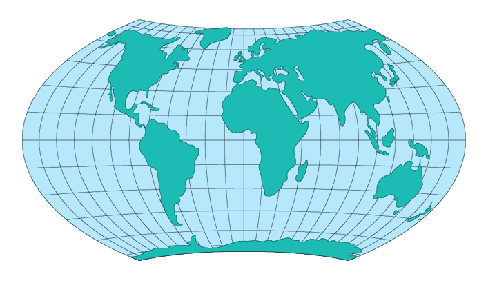

Hammer-Wagner
Usage

Usage:*
A modified form of
the Hammer projection and developed by Kalheinz Wagner of Germany in 1941,
the Hammer-Wagner projection is widely used for world maps, such as
climatic maps prepared by the U.S. Department of Commerce. The poles
correspond to the 65th parrallels on the Hammer, and the meridians are
repositioned.
* Usage information source:
Snyder, John P. Map Projections - A Working Manual Paper U.S. Geological
Survey Professional Paper 1395. Washington: United States Government
Printing Office, 1987.
Back to DSS Main Page